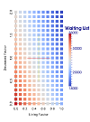

|  |
Kidney Transplant Process Model (KTPM)By: Christine HarveyRichard Stockton College of New Jersey |
The Kidney Transplant Process Model (KTPM) was built using data from the Organ Procurement and Transplantation Network Database. This system was developed by UNOS and contains all OPTN data related to every organ donation and transplant event in America since 1987. Statistics taken from this database as well as from OPTN reports were used to generate and then validate the model.
The purpose of the Kidney Transplant Process Model (KTPM) is to demonstrate and the kidney transplant process, from the initial waiting list to the post-transplant survival observations. In particular, this model focuses on the effects of increased organ availability on the entire transplant process. Thousands of Americans die every year waiting for a transplant. This model is a tool that can provide analysis for the effects of increased organ availability. Increases in living and/or deceased donor transplants can be simulated and the resulting survival rated can then be analyzed. This model includes a specific focus on patient age and ethnicity.